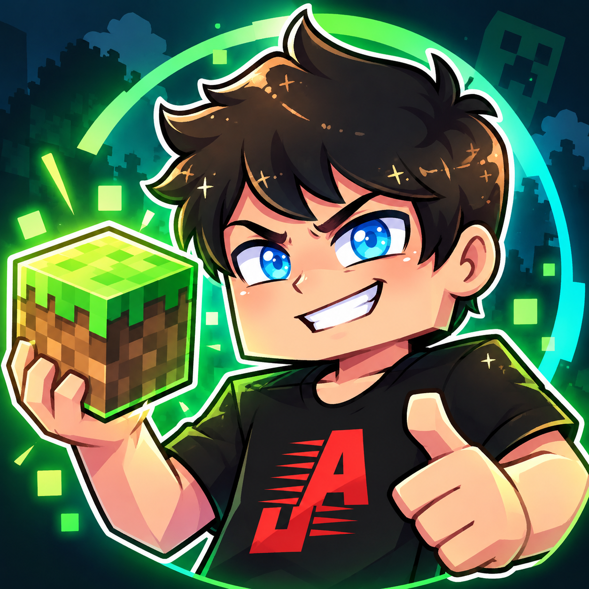

A native hardware journey
The verified tester target is specific hardware and firmware. Other device compatibility has not been established.
Read development notes →
ALILAUNCHERINDEPENDENT PROJECT · IN DEVELOPMENT
Minecraft Java on unusual hardware.
An ambitious native launcher bringing Minecraft Java Edition to unusual hardware.
Earlier gameplay on Java 1.8.9 and 1.20.1 is verified on real hardware. Java 17 C2 + Parallel GC passed standalone PS4 testing; Minecraft 1.20.1 with C2 failed during JVM initialization. Minecraft 26.3 reached Vulkan initialization but hit an unresolved VMA allocation-cleanup crash. USB detection still fails. No alpha is available.
See what’s verifiedTHE PROJECT
Minecraft Java on unusual hardware. AliLauncher is a personal engineering project bringing Minecraft Java Edition to unusual hardware.
The verified tester target is specific hardware and firmware. Other device compatibility has not been established.
Read development notes →Earlier gameplay has been verified on real hardware for Minecraft Java 1.8.9 and 1.20.1, with known limitations still under review.
Explore the feature status →Worlds and profiles matter. Versions stay separate, downloads remain gated, and experimental work stays clearly labeled.
Read the project terms →HONEST PROGRESS
Minecraft Java on unusual hardware. Standalone Java 17 C2 + Parallel GC passed on the development hardware, but this does not verify Minecraft 1.20.1 under C2; its latest test failed during JVM initialization. Minecraft 26.3 reached Vulkan initialization, then stopped on an unresolved VMA allocation-cleanup crash. Java 21/25 runtime installation checks are PC-only. USB detection remains unresolved. Dev 2.53 was packaged for private testing; Dev 2.54 fixes remain in development.
Follow the roadmap →FOLLOW THE BUILD
Development updates and creator videos live on AliHashemYT’s YouTube channel.